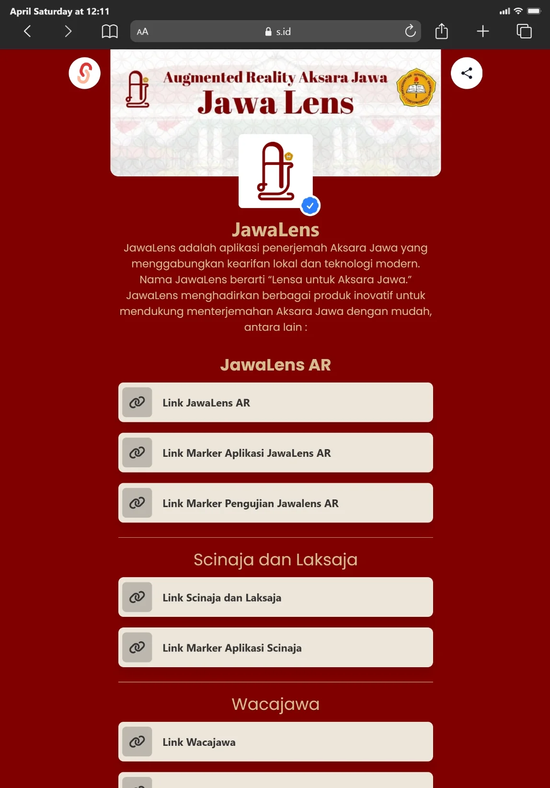
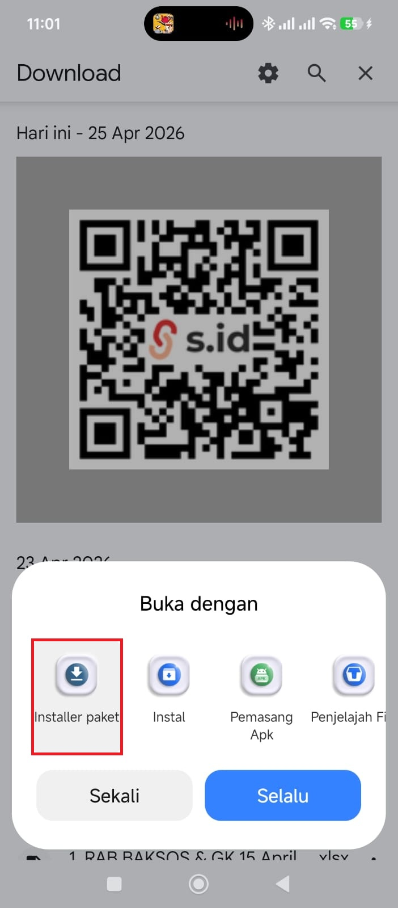
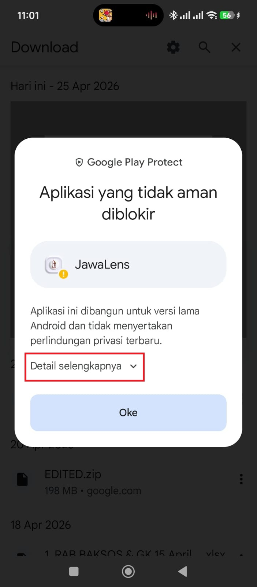
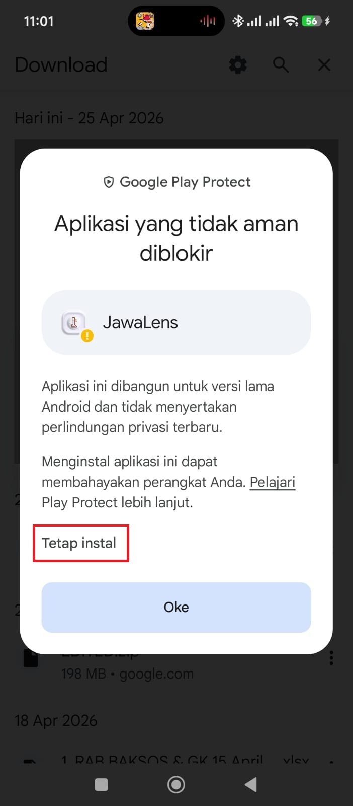

Tutorial Instalasi &
Troubleshooting
JawaLens
Panduan lengkap mulai dari cara mengunduh, menginstal, menggunakan aplikasi JawaLens, hingga solusi mengatasi error dan masalah yang mungkin Anda temui.

Persyaratan Sistem
Pastikan perangkat Anda memenuhi spesifikasi minimum berikut sebelum menginstal JawaLens.
Versi Android
Android Nougat atau yang lebih baru
RAM Minimum
Disarankan 3 GB atau lebih untuk performa optimal
Ruang Penyimpanan
Ruang kosong yang dibutuhkan untuk instalasi
Kamera
Kamera belakang dengan autofokus untuk AR
Diperlukan untuk pengunduhan awal dan pembaruan layanan ARCore. Setelah terinstal, tidak memerlukan internet.
Perangkat harus mendukung Google ARCore atau jika tetap error di unninstall saja aplikasi yang terbaru (Layanan Google Play For AR). Cek di daftar perangkat ARCore.
Cara Mengunduh & Menginstal
Ikuti langkah-langkah berikut untuk menginstal JawaLens di perangkat Android Anda.
Buka Tautan Unduhan Resmi
Kunjungi halaman utama JawaLens dan klik tombol "Download App", atau langsung akses tautan resmi kami di s.id/jawalens.
Selalu unduh dari sumber resmi untuk keamanan data Anda
Unduh File APK
Setelah halaman terbuka, klik tombol unduhan. Browser Anda akan mulai mengunduh file JawaLens.apk.
Tunggu hingga proses unduhan selesai. Anda dapat memantau progresnya di notifikasi atau panel
unduhan browser.
Aktifkan Izin Sumber Tidak Dikenal
Karena JawaLens diinstal di luar Play Store, Anda perlu mengaktifkan izin instalasi dari sumber tidak dikenal:
- Buka Pengaturan di ponsel Anda
- Pilih Keamanan atau Privasi
- Aktifkan opsi "Izinkan dari sumber ini" atau "Sumber Tidak Dikenal"
- Atau saat diminta saat membuka file APK, ketuk "Pengaturan" lalu aktifkan izin untuk browser/pengelola file Anda
Buka & Instal File APK
Buka notifikasi unduhan atau gunakan aplikasi File Manager untuk menemukan file APK yang telah diunduh. Ketuk file tersebut dan pilih "Instal" ketika muncul dialog konfirmasi.
{kind=link}
Ketuk gambar untuk memperbesar.
Izinkan Akses Kamera
Saat pertama kali membuka JawaLens, sistem akan meminta izin akses kamera. Ketuk "Izinkan" agar fitur Augmented Reality dapat berfungsi dengan optimal.
Akses kamera wajib untuk fitur AR transliterasi aksaraInstalasi Selesai! 🎉
Aplikasi JawaLens kini telah terinstal di perangkat Anda. Ikon aplikasi akan muncul di layar utama atau laci aplikasi. Buka aplikasi dan mulailah menjelajahi aksara Jawa dengan teknologi AR!
{kind=link}
Ketuk gambar untuk memperbesar.
Cara Menggunakan JawaLens
Setelah terinstal, ikuti langkah-langkah ini untuk mulai menscan aksara Jawa secara real-time.
Buka Aplikasi
Cari dan buka aplikasi JawaLens dari layar utama atau laci aplikasi perangkat Anda.
Klik Tombol "Play"
Pada layar utama aplikasi, ketuk tombol "Play" untuk mengaktifkan mode kamera AR.
Siapkan Marker
Buka file marker aksara Jawa dari link resmi marker kami. Tampilkan di layar lain atau cetak.
Arahkan Kamera ke Marker
Arahkan kamera belakang ponsel Anda ke marker aksara Jawa. Pastikan marker terlihat jelas dan pencahayaan cukup.
Lihat Hasil AR
Transliterasi aksara Jawa ke Latin akan muncul secara real-time di atas marker melalui teknologi Augmented Reality.
Ganti Marker
Untuk menscan marker berbeda, tutup kamera sebentar lalu arahkan ke marker baru, atau tekan tombol Kembali untuk memulai ulang.
Tips untuk Hasil Terbaik
- Pastikan pencahayaan ruangan cukup terang, hindari bayangan pada marker
- Pegang ponsel dengan stabil saat menscan marker
- Jarak ideal antara kamera dan marker adalah 15–30 cm
- Marker tidak boleh terlipat atau rusak agar dapat dikenali dengan akurat
- Gunakan layar dengan kecerahan tinggi jika menampilkan marker dari perangkat lain
Troubleshooting & Solusi Error
Temukan solusi cepat untuk masalah umum yang mungkin Anda temui saat instalasi atau penggunaan.
Penyebab: Perangkat Anda belum menginstal atau memiliki versi Layanan Google Play For AR (ARCore) yang sudah kadaluarsa.
Solusi:
- Buka Google Play Store di ponsel Anda
- Ketik dan cari "Google Play Services for AR" atau klik tautan langsung: Google Play For AR
- Klik "Instal" atau "Perbarui" jika sudah terinstal
- Setelah instalasi selesai, buka kembali aplikasi JawaLens

Penyebab: Sistem AR belum mereset status pelacakan marker sebelumnya.
Solusi Cepat (Cara 1):
- Tutup kamera ponsel dengan tangan Anda sebentar hingga layar menjadi gelap
- Buka kembali tangan Anda dan arahkan kamera ke marker yang baru
- Sistem AR akan mereset dan mengenali marker baru
Solusi Alternatif (Cara 2):
- Tekan tombol Kembali (back) di bagian bawah kiri layar ponsel
- Aplikasi akan kembali ke menu utama
- Ketuk kembali tombol "Play"
- Arahkan kamera ke marker yang diinginkan
Penyebab: Google Play Protect mendeteksi JawaLens sebagai aplikasi dari luar Play Store dan menampilkan peringatan keamanan. Ini adalah perilaku normal untuk semua APK yang diinstal secara manual (sideload) dan bukan berarti aplikasi berbahaya. JawaLens telah diuji bebas dari virus — lihat halaman Keamanan Aplikasi untuk bukti lengkap.
Langkah-langkah Mengatasinya:
{kind=link}

1. Pilih Installer 2. Konfirmasi{kind=link}

3. Klik Detail{kind=link}

4. Tetap Instal 5. Selesai!Ketuk gambar untuk memperbesar dan melihat detail setiap langkah.
- Ketuk file APK yang sudah diunduh → pilih "Installer paket"
- Ketuk "Instal" pada dialog konfirmasi
- Saat peringatan Play Protect muncul, ketuk "Detail selengkapnya"
- Ketuk "Tetap instal" — JawaLens aman untuk diinstal
- Ketuk "Buka" untuk langsung menggunakan aplikasi
Penyebab umum:
- Izin instalasi dari sumber tidak dikenal belum diaktifkan
- File APK yang diunduh tidak lengkap atau rusak (corrupt)
- Penyimpanan internal perangkat penuh
- Versi Android tidak kompatibel (di bawah 7.0)
Solusi:
- Periksa dan aktifkan Izin Sumber Tidak Dikenal di Pengaturan → Keamanan (lihat Langkah 3 di bagian Instalasi)
- Hapus file APK yang sudah diunduh, lalu unduh ulang dari tautan resmi
- Bebaskan ruang penyimpanan minimal 200 MB di memori internal
- Pastikan versi Android Anda adalah 7.0 (Nougat) atau lebih baru
Penyebab: RAM perangkat penuh, cache aplikasi menumpuk, atau konflik dengan versi sebelumnya.
Solusi:
- Tutup semua aplikasi yang berjalan di latar belakang untuk membebaskan RAM
- Buka Pengaturan → Aplikasi → JawaLens
- Ketuk "Hapus Cache" lalu coba buka kembali
- Jika masih crash, ketuk "Hapus Data" dan buka ulang aplikasi
- Sebagai langkah terakhir, uninstal dan instal ulang JawaLens dari tautan resmi

Penyebab: Izin akses kamera untuk JawaLens pernah ditolak atau belum diberikan.
Solusi:
- Buka Pengaturan di ponsel Anda
- Pilih Aplikasi atau Manajemen Aplikasi
- Cari dan ketuk JawaLens
- Pilih Izin (Permissions)
- Aktifkan izin Kamera menjadi "Izinkan"
- Kembali dan buka ulang aplikasi JawaLens
Penyebab: Perangkat Android Anda tidak masuk dalam daftar perangkat yang didukung oleh Google ARCore, atau driver kamera tidak kompatibel dengan library AR.
Cara Mengecek Kompatibilitas:
- Kunjungi halaman resmi daftar perangkat ARCore
- Cari nama model perangkat Anda di daftar tersebut
- Jika perangkat Anda terdaftar, coba update sistem Android ke versi terbaru
Jika Perangkat Tidak Kompatibel:
- Sayangnya fitur AR tidak dapat berjalan di perangkat yang tidak mendukung ARCore
- Kami merekomendasikan penggunaan perangkat dengan Android 8.0+ dan dukungan ARCore resmi
- Hubungi tim kami melalui Instagram untuk rekomendasi perangkat yang kompatibel
Penyebab umum:
- Marker terlalu kecil atau beresolusi rendah
- Pencahayaan terlalu redup atau terlalu silau (refleksi)
- Marker mengalami distorsi, terlipat, atau tertutup sebagian
- Jarak kamera terlalu jauh atau terlalu dekat dari marker
Solusi:
- Pastikan marker dicetak minimal ukuran A5 (14.8 × 21 cm) atau tampilkan di layar berukuran besar
- Tingkatkan pencahayaan ruangan atau gunakan cahaya buatan yang merata
- Hindari permukaan mengkilap yang memantulkan cahaya berlebihan
- Coba jarak 15–30 cm antara kamera dan marker
- Pastikan marker tidak terlipat dan terlihat penuh di frame kamera
- Unduh ulang file marker dari tautan resmi jika marker yang digunakan terlihat buram
FAQ Instalasi & Penggunaan
Jawaban atas pertanyaan yang paling sering diajukan seputar JawaLens.
Apakah JawaLens tersedia di Google Play Store?
Apakah JawaLens bisa digunakan tanpa koneksi internet?
Apakah JawaLens aman dan tidak mengandung virus?
Berapa banyak aksara Jawa yang dapat dikenali JawaLens?
Apakah JawaLens bisa digunakan di iPhone / iOS?
Di mana saya bisa mendapatkan file marker untuk JawaLens?
Bagaimana cara memperbarui aplikasi JawaLens ke versi terbaru?
Instagram Resmi
Ikuti akun kami untuk update terbaru, tips penggunaan, dan info pembaruan aplikasi.
@jawalens_Tim Pengembang
Dikembangkan bersama Pusat Keunggulan Teknologi Cerdas Universitas Sanata Dharma.
@pktc.usdBeri Penilaian
Bantu kami berkembang dengan memberikan penilaian dan masukan Anda tentang JawaLens.
Beri Penilaian Sekarang